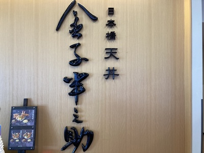
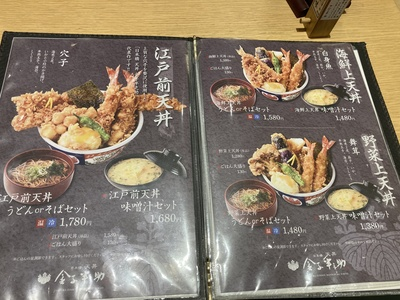
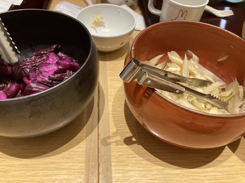
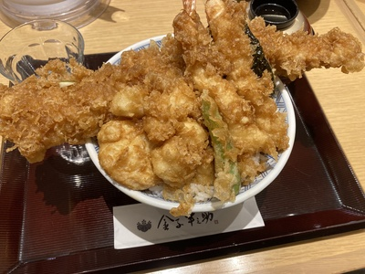

天丼屋:金子半之助
日本橋天丼 金子半之助
2024/06/23
小矢部イオンにある江戸前天丼屋、金子半之助に行ってきました。
娘が観覧車に乗りたいということで観覧車に乗った後にランチで行ってきました。
一度行ったことがあるお店ですが、本日も満席で４組待ちで入ることができました。
江戸前天丼はごま油で揚げた天ぷらに黒い甘タレがかけてあるのが特徴です。

店に入り、メニューを確認し、大きいアナゴが乗った「江戸前天丼」の味噌汁セット、「野菜上天丼」のうどんセットを注文しました。

テーブルには大きい漬物鉢が2つ置いてあり、中には漬物とガリごぼうが入っていました。
ガリごぼうはガリ特有の辛さとごぼうの食感が合っていて美味しいです。
娘の口には辛すぎて、食べれませんでした😱

ガリごぼうをつまんでいると天丼が到着しました。
大きい穴子天は貫禄があります。

穴子、貝柱、海老天(２尾)、半熟たまご、シシトウ、海苔の天ぷらが乗っています。
穴子天は中はふわふわ、外はカラッとしていて美味しいです😁
江戸前天丼ですが、
そこまでタレでしっとりしている感じはしませんでした。
半熟たまごがごま油で揚げた衣とあっており、他の天ぷらと絡めても良いです。
娘もうどんと妻にわけてもらった海老天を食べて満足そうでした😁